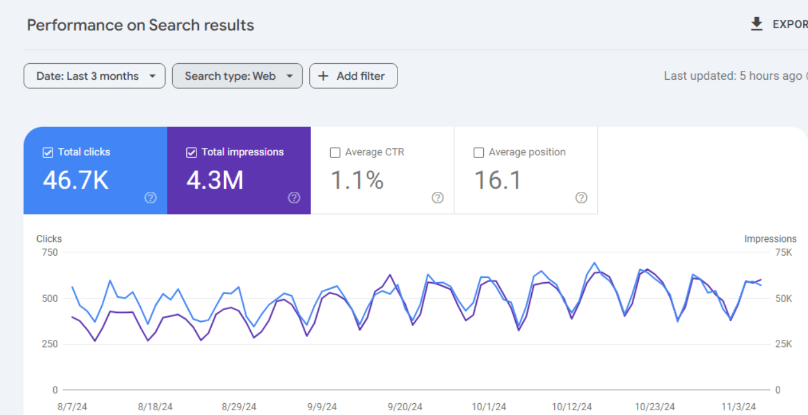
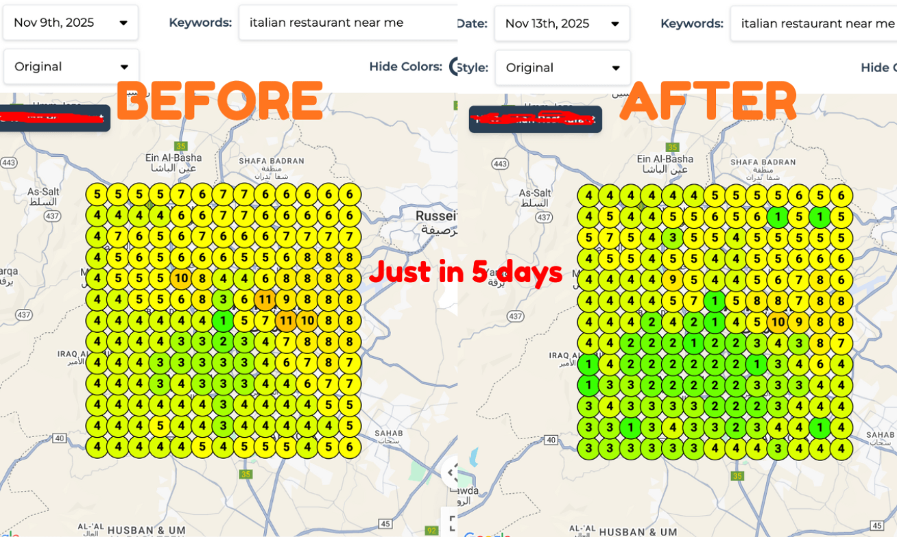
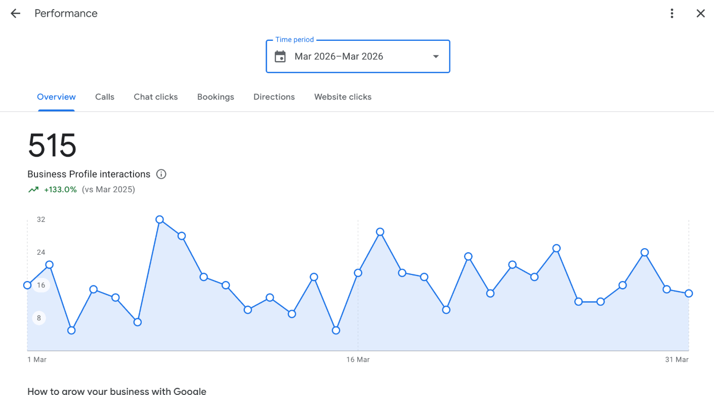
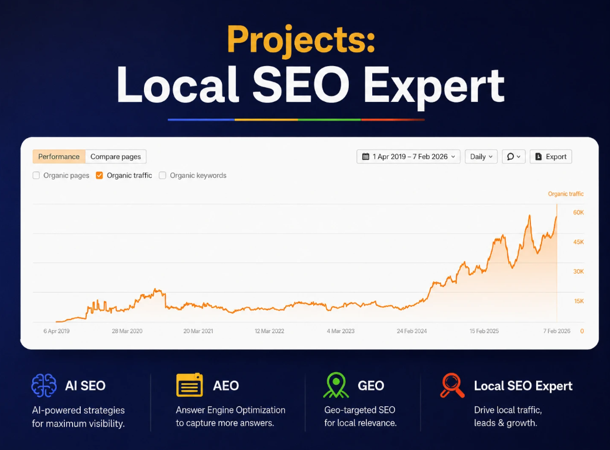
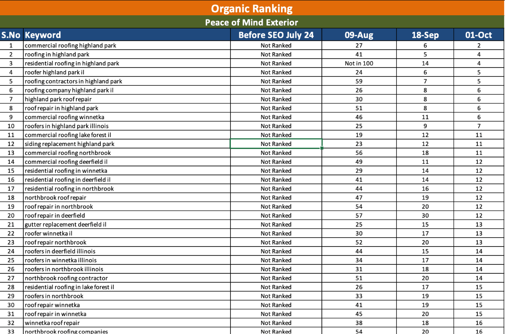

System 01 · Discoverability
Local Search
Google Business Profile, Google Maps, local SEO, citations, reviews and location signals designed to put your business in front of high-intent local buyers.
See ranking proof →We build the digital systems that help local businesses get discovered, earn trust, generate enquiries and turn visibility into real customer action.
Great service means little if competitors are taking the Google Maps, local search and organic visibility that should belong to you.
Customers compare your profile, website, reviews and reputation in seconds. Every weak signal creates hesitation.
Visibility is only useful when it leads somewhere: calls, directions, website visits, enquiries and customers.
We connect the pieces instead of treating SEO, websites and marketing as isolated tasks.
Google Business Profile, Google Maps, local SEO, citations, reviews and location signals designed to put your business in front of high-intent local buyers.
See ranking proof →Websites and search strategies built around clarity, technical health, relevant content and the journey from search result to customer.
See SEO proof →Turn attention into enquiries with clearer offers, stronger calls to action, landing pages, funnels and conversion-focused customer journeys.
Start a conversation →Use AI and automation to accelerate research, content, workflows, customer experiences and repetitive marketing operations — without replacing strategy.
Explore the fit →Selected results from SEO and Google Business Profile work.

Complete SEO including content, on-page and off-page work. Targeted link building and social campaigns produced a strong rise in search visibility and traffic.

For an Italian restaurant in Amman, the work focused on a deep GBP audit, full optimization and high-intent local keyword targeting.

GBP optimization, citations, reviews, posts, Q&A, photos and profile signals moved the account forward without paid advertising.

Local SEO audit, GBP optimization, on-page signals, schema, 30+ citations, location landing pages, Core Web Vitals and local link building.
Peace Of Mind Exterior Co. is a roofing company where monthly local SEO has been ongoing since August 2023. The strategy included expanding city coverage and continuously improving local relevance.

Ten city pages have been incorporated so far, expanding the website beyond a single low-volume target city and supporting visibility in several surrounding markets.
Discuss your market →We start with the business problem, identify the bottleneck, build the right system and measure what changes.
Audit search visibility, GBP, website, competitors, customer journey and conversion friction.
Prioritize the work most likely to move visibility, trust or customer action.
Implement the system across search, website, content, reputation and conversion.
Look beyond rankings: calls, directions, clicks, enquiries, traffic and other meaningful outcomes.

The Uptrenders was built around a simple belief: digital marketing should do more than make a business look active. It should make the right customers notice, trust and act.
That is why our work connects Local SEO, websites, reputation, content, lead generation and AI — with business outcomes at the center.
We build digital growth systems across Local SEO, Google Business Profile optimization, websites, SEO, reputation, lead generation and AI automation — depending on the business bottleneck.
No. Local search is a major specialization, but the goal is broader: help the right people discover the business, trust it and take the next step. That can require SEO, website work, reputation, content or conversion improvements.
It depends on the market, competition, starting point and scope. Some local ranking movements can happen quickly, while sustainable organic growth usually requires consistent work over time. We measure progress against the actual system being built.
Paid advertising can be part of a broader strategy, but the case studies presented here are primarily SEO and Google Business Profile work. The medical clinic result, for example, was achieved without paid advertising.
Start with the business problem. Send a short description of your business, location and what you want to improve. We can then identify where the biggest growth gap is.
If you're ready to improve your visibility, local presence and customer journey, let's look at the gap and decide what deserves attention first.
Start the conversation ↗